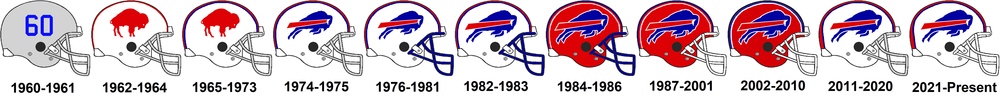

The Buffalo Bills, established in 1960, have a rich history in the National Football League (NFL). Over the years, the team has become synonymous with resilience and dedication. The Bills have had notable successes, including four consecutive AFC Championships from 1990 to 1993, a feat unmatched in the modern NFL.
The team's passionate fan base, known as the "Bills Mafia," is renowned for its unwavering support, creating an electric atmosphere during games at the iconic Highmark Stadium in Buffalo, New York.
Throughout their history, the Buffalo Bills have seen legendary players don the blue and red, leaving an indelible mark on the franchise. From Jim Kelly to Thurman Thomas and Bruce Smith, these players have contributed to the team's storied legacy.
As the Bills continue to make history, fans eagerly anticipate the next chapter in the team's journey, filled with thrilling moments, victories, and the unbreakable spirit that defines the Buffalo Bills.
The history of the Buffalo Bills logos is a dynamic narrative that reflects the team's evolution and identity in the National Football League (NFL). The franchise's original logo, introduced in 1960 when the team was founded, featured a charging buffalo named "Buffalo Bill" in red, white, and blue. In the early 1970s, the team adopted a more stylized and modern buffalo design, emphasizing the dynamic spirit of the game. As the years progressed, the Bills went through several logo updates, with variations in colors and stylistic elements. Notably, in 2002, the team unveiled a more streamlined and aggressive buffalo logo, emphasizing a forward-looking approach. This design persisted until 2011 when the Bills returned to a more classic and traditional depiction of the buffalo, aligning with the team's rich history.
The logos not only represent the Bills' commitment to their Buffalo roots but also mirror the changing aesthetics of sports branding over the decades. Each iteration tells a story of the team's journey and resonates with fans, creating a visual legacy that accompanies the Buffalo Bills on their quest for success in the NFL.
